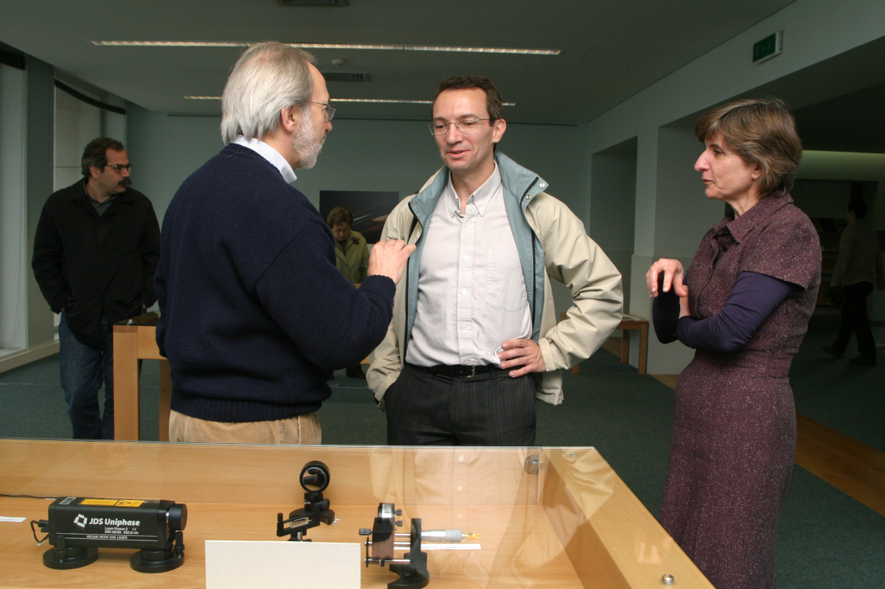

Esta exposição, no âmbito das comemorações do Ano Internacional da Física, esteve patente na biblioteca da Faculdade de Engenharia da Universidade do Porto, do 21 de Abril até o 13 de Junho de 2005.
A luz é um fenómeno que tem atraído a atenção de vários cientistas ao longo da história. A explicação física da luz deu origem a duas teorias rivais, fonte de animados debates na comunidade científica. Só em 1905 as duas teorias seriam finalmente conciliadas com o trabalho de Einstein sobre o efeito fotoelétrico, que é um dos acontecimentos comemorados no Ano Mundial da Física - 2005.
As experiências em exposição seguem o percurso das teorias da luz, desde Newton (século XVII) até Einstein (século XX). Há uma página separada para cada experiência (lista em baixo) e também pode obter o texto completo num ficheiro PDF.
Exposição e textos preparados por Jaime Villate.